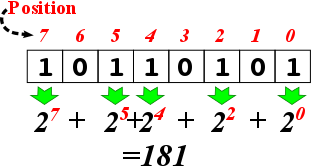

3. Representation of Data¶ Open the notebook in Colab
As we discussed in detail in Chapter 2, when we want to solve a world problem using a computer, we have to find what data is involved in this problem and how we can process this data (i.e. determine the algorithm) towards the solution of the problem – let us recall this with Fig. 3.1 from Chapter 2.

Fig. 3.1 Solving a world problem with a computer requires first designing how the data is going to be represented and specifying the steps which yield the solution when executed on the data. This design of the solution is then written (implemented) in a programming language to be executed as a program such that, when executed, the program outputs the solution for the world problem. [From: G. Üçoluk, S. Kalkan, Introduction to Programming Concepts with Case Studies in Python, Springer, 2012]¶
At this stage, you may be wondering what ‘structured data’ is and how it differs from ‘data’. As we already know, data is stored in the memory. Let us illustrate this with an example: Assume that we have a table full of rows such that each row holds an angle value and its cosine value (both expressed as decimal numbers). How would you organize the storing of these rows in the memory? Two straightforward options are:
- Row-by-row:\(\hspace{4ex}\begin{array}[t]{ll} Anglevalue_1 \\ Cosinevalue_1 \\ Anglevalue_2 \\ Cosinevalue_2 \\ \vdots \\ Anglevalue_n \\ Cosinevalue_n \end{array}\)
- Column-by-Column:\(\hspace{4ex} \begin{array}[t]{ll} Anglevalue_1 \\ Anglevalue_2 \\ \vdots \\ Anglevalue_n \\ Cosinevalue_1 \\ Cosinevalue_2 \\ \vdots \\ Cosinevalue_n \end{array}\)
Apart from this ordering, there is the issue of whether we should sort the values. If yes by which one: the angle or the cosine values? In a descending order or ascending order? All these questions are what we try to determine in a structured data.
There are other ways to organize data even for the example data as simple as the above example table. Unfortunately, these are beyond the scope of this book.
Now, we will look into the atomic structure of data representation: i.e. how integers, floating points and characters are represented.
The electronic architecture used for the von Neumann machine, namely the CPU and the memory, is based on the presence and absence of a fixed voltage. We conceptualize this absence and presence by ‘0’ and ‘1’. This means that any data that is going to be processed on this architecture has to be converted to a representation of ‘0’s and ’1’s. We, though, keep in mind, that any ’1’ (or ‘0’) in our representation is actually the presence (or absence) of a voltage in a specific point of the electronic circuitry.
3.1. Representing integers¶
Mathematics already has a solution for representing integers in binary via base-2 calculation or representation. The idea behind base-2 representation is the same as representing base-10 (decimal) integers. Namely, we have a sequence of digits, each of which can be either 0 or 1. Counting starts from the right-most digit. A ‘1’ in a position \(k\) means “additively include a value of \(2^k\)”:
The following is an example for expressing the integer 181 in base-2:

In other words, \((181)_{10} = (10110101)_2\).
Converting a decimal number into binary
A decimal number can be easily converted into binary by repeatedly dividing the number by 2, as shown in Fig. 3.1.1. At each step, the quotient of the previous step is divided by two. This division is repeated until the quotient is zero. At this point, the binary sequence of remainders is the representation of the decimal number.
Having doubts? You can easily cross-check your calculation by multiplying each bit by its value (\(2^i\) if the bit is at position \(i\)) and sum up the values (like we did above).
{kind=link}
This looks easy. However, this is just a partial solution to the ‘binary representation of integers’ problem: It does not answer how we can represent negative integers.
3.1.1. Sign-Magnitude Notation¶
Decimal arithmetics provide the minus sign (-) for representing negativity. However, electronics of the von Neumann machinery requires that the minus is also represented by either a ‘1’ or ‘0’. We can reserve a bit, for example the left-most digit, for this purpose. If we do this, when the left-most digit is a ‘1’, the rest of the digits are encoding the magnitude of the ‘negative’ integer. One point to be mentioned is that this requires a fixed size (a fixed number of digits) for the ‘integer representation’. In this way, the electronics can recognize the sign bit and the magnitude part. This is called the sign-magnitude notation.
Sadly, this notation has certain disadvantages:
1. Addition and subtraction
Consider adding two integers. Based on their signs, we have the following possibilities:
positive + positive
negative + positive
positive + negative
negative + negative
Then, to be able to perform addition, the electronics must do the following:
if both integers are positive then the result is positive, obtained by adding the magnitudes (and not setting the sign bit).
if both integers are negative, then the result is negative, obtained by adding the magnitudes and setting the sign bit to negative.
otherwise, if one is negative and the other is positive then:
find the bigger magnitude,
subtract the smaller magnitude from the bigger one, obtain the result,
if the bigger magnitude integer was negative the result is negative (set the sign bit) else don’t set the sign bit in result.
This was only for the case of addition, a similar electronic circuitry is needed for subtracting two integers.
This technique has the following drawbacks: * Requires separate electronics for subtraction. * Requires electronics for magnitude-based comparison and an algorithm implementation for setting the sign bit. * Electronically, it has to differentiate among addition and subtraction.
2. Representing number zero
Another limitation of the sign-magnitude notation is that number zero \((0)_{10}\) has two different representations, e.g. in a 4-bit representation:
\((1\ 000)_2 ==> (-0)_{10}\)
\((0\ 000)_2 ==> (+0)_{10}\)
In modern computers, we use a method that does not have these drawbacks.
3.1.2. Two’s Complement Representation¶
Two’s complement representation can be considered as an extension of the sign-magnitude notation:
The positive integers are represented by their base-2 representation.
For negative integers, we need a one-to-one mapping for all negative integers bounded by value to a binary representation (also bounded by value), so that :
The sign bit is set to 1, and
When the whole binary representation (including the sign bit) is treated as a single binary number it operates correctly under addition. When the result, obtained purely by addition, produces a sign bit, this means the result is the encoding of a negative integer.
There are two alternatives for this mapping: One’s-complement and two’s complement. In this section, we will introduce the more popular one, namely the two’s complement representation:
If we are given \(n\) binary digits to be used (for a 32-bit computer, \(n=32\); for a 64-bit computer, it is 64), then we are able to represent integer values in the range \([−2^{n−1},2^{n−1} − 1]\). Then, two’s complement representation of an integer can be obtained as follows:
If the integer is positive simply, convert it to base-2.
If it is negative: Let the magnitude (its absolute value) be \(p\), then
convert \(p\) to base-2
negate this base-2 representation by flipping all 1s to 0s and all 0s to 1s: \(1\leftrightarrow 0\).
add \(1\) to the result of the negation.
Here are some examples for 8-bit numbers (note that the valid decimal range is \([-128,127]\)):
3.1.3. Why does Two’s Complement work?¶
The Two’s Complement method may sound arbitrary at first. However, there are solid reasons for why it works. To be able to explain why it works, let us first revisit our basic computer organization from Chapter 1:
The CPUs can only understand and work with fixed-length representations: Assume that our computer is an 8-bit computer such that registers in the CPU holding data and the arithmetic-logic unit can only work with 8 bits. The fixed-length design of the CPU has a severe implication. Consider the following 8-bit number (which is \(2^8-1\)) in a register in the CPU:
\(\begin{array}{|c|c|c|c|c|c|c|c|} \hline 1&1&1&1&1&1&1&1\\ \hline \end{array}\)
If you add 1 to this number, the result would be:
\(\begin{array}{|c|c|c|c|c|c|c|c|} \hline 0&0&0&0&0&0&0&0\\ \hline \end{array}\)
In other words, we lose the 9th bit since the CPU cannot fit that into the 8-bit representation. Mathematically, this arithmetic corresponds to modular arithmetic: For our example, the modulo value is \(2^8\) and the addition that we just performed can be written mathematically as:
What does this have to do with the Two’s Complement method? Consider taking the negative of a number \(a\) in a \(2^n\)-modulo system:
Now let us rewrite this in a form that will seem familiar to us:
In other words, Two’s Complement representation uses the negative value of a number relying on the modular arithmetic, i.e. the fixed-length representation of the CPUs. This technique is not new and was used in mechanical calculators long before there were computers.
3.1.4. Benefits of the Two’s Complement Representation¶
Let us revisit the limitations of the sign-magnitude representation:
Addition and subtraction: With the two’s complement method, we do not need to check the signs of the numbers and perform addition and subtraction using just an addition circuitry. E.g. \((+2)_{10}+(-3)_{10}\) is just equal to \((-1)_{10}\) without doing anything extra other than plain addition (for a 4-bit representation):
Representation of +0 and -0: Another issue with the sign-magnitude representation was that +0 and -0 had different representations. In the Two’s Complement representation, we see that this is resolved – for example (for a 4-bit representation):
\((+0)_{10} = (0000)_2\)
\((-0)_{10} = -(0000)_2 = (1111)_2 + (1)_2 = (0000)_2\), where we used Two’s Complement to convert \(-(0000)_2\) into \((1111)_2 + (1)_2\) by flipping the bits and adding 1.
The fifth bit is lost because we have only four bits for representation.
3.1.5. PRACTICE TIME¶
Please follow the Colab link at the top of the page to have a practical session on Two’s Complement representation.
3.2. Representing real numbers¶
Floating point is the data type used to represent non-integer real numbers. On today’s computers, all non-integer real numbers are represented using the floating point data type. Since all integers are real numbers, we could represent integers also using the floating point data type. Although you could do so, this is usually not preferred, since floating point operations are more time consuming compared to integer operations. Also, there is the danger of precision loss, which we will discuss later.
Almost all processors have adopted the IEEE 754 binary floating point standard for binary representation of floating point numbers. The standard allocates 32 bits for the representation, although there is a recent 64-bit definition which is based on the same layout idea just with some more bits.
Let us see how we represent a floating point number with an example. Let us consider a decimal number with fraction: 12263.921875. This number can be represented in binary as two binary numbers: the whole part in binary and the fractional part in binary. Then, we can join them with a period.
To see this, let us first dissect decimal (base-10) 12263.921875:
Keeping the denotational similarity, but switching to (base-2), in other words to binary, we can express the same number as:
How did we obtain the fractional part? By multiplying the fractional by two until we obtain zero for the fraction part, as illustrated in Fig. 3.2.1. This is in certain ways the reverse of what we did for converting the whole part into binary, in Section 3.1.
{kind=link}
At this stage, it is worth mentioning that it is not always possible to convert the fractional part into binary with finite number of bits. In other words, it is quite possible to have a finite number of fractional digits in one base, and infinitely many in another base for the same value. We will come back to this point later.
Depending on the size of the whole part, the period could be anywhere. Therefore, the next step towards obtaining the IEEE 754 representation is to reposition the period that separates the whole part from the fraction, to be placed just after the leftmost ‘1’. To be able to do this without changing the value of the number, a multiplicative factor of \(2^n\) has to be introduced, where \(n\) is how many bits the period is moved. If it is moved to the left, it has a positive value, otherwise it is negative. This factor is important, because it will contribute to the representation.
For our example, the period has to be moved left by 13 digits. Therefore, the multiplicative factor (to keep the value the same) is \(\times 2^{+13}\). At this stage our representation has become:
Since this is doable for all values (except 0.0, which will be dealt with with an exception), there is no need to keep a record of the whole part, i.e. the only remaining ’1’ value to the left of the period. Also, the period is always there, so we can simply drop it. The mantissa part of the representation is obtained by keeping exactly the first 23 bits of what is left. This leads to the following 23 bits for our example (note the extra zeros at the end, added to fill complete the representation to 23 bits):
\(\begin{array}{|c|c|c|c|c|c|c|c|c|c|c|c||c|c|c|c|c|c|c|c||c|c|c|c|c|c|c|} \hline 0&1&1&1&1&1&1&1&0&0&1&1&1&1&1&1&0&1&1&0&0&0&0 \\ \hline \end{array}\)
3.2.1. The IEEE754 Representation¶
{kind=link}
The exponent of the multiplicative factor, namely \(n\) (which can be negative) in \(2^n\), becomes a part of the representation – see Fig. 3.2.2. To get rid of the minus sign problem, a constant value, \(127\), is added to \(n\). This value becomes the exponent part of the representation.
Adding a constant value to a number to be able to represent positive and negative numbers in binary is called the excess representation, or \(k\)-excess representation, with \(k\) being the constant number that is added, e.g. \(k=127\). Why we use k-excess representation is going to be clear when we compare it with two’s complement representation in Table 3.2.1. You should see from the table that if the binary representation of a decimal number is larger, the decimal number is also larger with the \(k\)-excess representation; however, this is not the case for the two’s complement representation. This is important for comparing two floating point numbers: Without decoding the whole floating point representation, which is expensive, we can just look at the \(k\)-excess representation of the exponents and the fractional parts to compare numbers.
Decimal number |
k-excess (\(k=8\)) |
Two’s complement |
|---|---|---|
7 |
1111 |
0111 |
6 |
1110 |
0110 |
5 |
1101 |
0101 |
4 |
1100 |
0100 |
3 |
1011 |
0011 |
2 |
1010 |
0010 |
1 |
1001 |
0001 |
0 |
1000 |
0000 |
−1 |
0111 |
1111 |
−2 |
0110 |
1110 |
−3 |
0101 |
1101 |
−4 |
0100 |
1100 |
−5 |
0011 |
1011 |
−6 |
0010 |
1010 |
−7 |
0001 |
1001 |
−8 |
0000 |
1000 |
In our example the factor was \(2^{13}\). Adding \(k=127\) yields \(13+127=140\), which has an 8-bit representation of 10001100. This will become the exponent portion (the 8 green bits in Figure 3.4) of the IEEE754 representation.
It is possible that the value that is going to be represented is a negative value. This information is stored as a ‘1’ in the first bit of the representation. For a positive value, a ‘0’ bit is used.
Finally, our example gets a IEEE754 representation as:
\(\begin{array}{|c|c|c|c|c|c|c|c|c|c|c|c|c|c|c|c|c|c|c|c|c||c|c|c|c|c|c|c|c||c|c|c|c|c|c|c|} \hline 0 & 1&0&0&0&1&1&0&0 & 0&1&1&1&1&1&1&1&0&0&1&1&1&1&1&1&0&1&1&0&0&0&0 \\ \hline \end{array}\)
How is real number ‘0.0’ represented?
Floating point number zero is represented as all zero bits in the positional range [1-31]. The zeroth bit, namely the sign bit, can be either ‘0’ or ‘1’.
3.2.2. Information loss in floating-point representations¶
The condition for a floating point number to be represented “exactly” by the IEEE754 standard is for the number to be equal to:
where \(m\) and \(n\) are two integers so that \(|m-n|\le 24\) (it is fine if the equation is not very clear – we will show some examples below). In addition to this, there is the constraint that \(|n| \le 127\) (think about why). Nothing can be done about the second constraint, but as far as the first constraint is concerned, practically we can approximate the number leaving off (truncating) the less significant bits (those to the right, or mathematically those with a smaller \(k\) value in the sum above), so that \(|m-n|\le 24\) is satisfied.
Actually, many rational numbers, even, are not expressible in the form of the sum above: As an example, try deriving the representation of 4.1 and see whether you can represent it in binary with finite number of bits. In addition, we have infinitely many irrational numbers which do not have finite fractions: e.g. \(\sqrt{2}, \sqrt{3}, \pi, e\). To be able to use all these numbers in computers, we approximate them. Do not worry, it is something quite common in applied sciences.
Approximation comes with some dangers: When you subtract two truncated numbers which are close to each other, then the result you obtain has a high imprecision. This also is the case with multiplication and division of relatively big numbers.
Though we have not started working with Python yet, we will display some self explanatory examples and comment on them:
>>> 0.9375 - 0.9 0.03749999999999998
The first line is some input that we typed in, to be carried out, and the following line is what the Python interpreter returned as the result. Surprise! (Actually a bad one!) In contrary to our expectation, the result is not 0.0375. The reason is that 0.9375 is one of the rare numbers that could be represented as a finite sum \(\sum_{k=1}^N(digit_k\cdot2^{-k}),\quad digit_k\in \\{0,1\\}\) such that \(N\) stays in the IEEE representation limit. Actually for 0.9375, \(digit = [1,1,1,1]\) and \(N=4\).
On the other hand, quite unexpectedly, 0.9 is not so. It cannot be expressed as a similar sum where \(N\) stays in the IEEE representation limit. Actually, \(N\) extents to \(+\infty\) for 0.9. Hence the \(digit_n\) sequence has to be truncated before it can stored in the IEEE representation. The bits that do not fit into the representation are simply ignored: In other words, the number loses its precision.
This is combined with a similar representation problem of 0.0375, which leads to another loss and we arrive at 0.03749999999999998. Bottom line: many numbers cannot exactly be represented in the IEEE754 format, and this causes precision loss.
Things can get even worse. Consider:
>>> 2000.0041 - 2000.0871 -0.0829999999998563 >>> 2.0041 - 2.0871 -0.08299999999999974
Actually both results should have been -0.0830. Despite having an imprecision, the imprecision is not consistent. This is because the loss in the first example (the one where the whole part is 2000) is bigger than the loss in the second one since 2000 needs more bits to be represented compared to 2.
Pi (\(\pi\)) is a transcendental number. The fractional part never stops, in any base. Let us give it a shot on the Python interpreter:
>>> PI = 3.141592653589793238462643383279502884197169399375105820974944592307816406286 >>> print(PI) 3.141592653589793
Ok, from this we understand that the IEEE representation could only accommodate so many bits for the 15 places in the fractional part. That looks quite precise, but let us take a look at the \(\sin\) and \(\cos\) values:
>>> sin(PI) 1.2246467991473532e-16 >>> cos(PI) -1.0
Interestingly, we received a slight error for the sine value, which is different from 0.0. But when it comes to the cosine value, we were lucky that imprecision somewhat cancelled out and gave us the correct result.
We are thought since primary school that addition is associative. Hence \(A + (B + C)\) is the same as \((A+B)+C\). In floating point arithmetic, this may not be so:
>>> A = 1234.567 >>> B = 45.67834 >>> C = 0.0004 >>> AB = A + B >>> BC = B + C >>> print (AB+C) 1280.2457399999998 >>> print (A+BC) 1280.2457400000001
This is again a combination of the precision loss phenomena introduced above. Most of the intermediate steps of a calculation have precision losses of their own.
As a final word about using floating point numbers, it is worth stressing a common mistake commonly made but has nothing to do with the precision loss mentioned. Let us assume you provide your program the Pi number to be 3.1415. You do your calculations and obtain floating point numbers with 14-15 digit fractional parts. Knowing about the precision loss, you assume that maybe a couple of the last digits are wrong but at least 10 digits after the decimal point are correct. However, this is a mistake: You made an approximation in the 5th digit after the decimal point in number Pi which will propagate through your calculation. It can get worse (for example if you subtract two very close numbers and use it in the denominator), but can never get better. Your best chance is to get a correct result in the 4th digit after the decimal point. The following digits, as far as precision is concerned, are bogus.
So, what can we do? Here are some rules of thumb about using floating point numbers:
It is in your best interest to refrain from using floating points. If it is possible transform the problem to the integer domain.
Use the most precise type of floating point provided by your high-level language, some languages provide you with 64 bit or even 128 bit floats, use them.
Use less precision floating points only when you are in short of memory.
Subtracting two floating points close in value has a potential danger.
If you add or subtract two numbers which are magnitude-wise not comparable (one very big the other very small), it is likely that you will lose the proper contribution of the smaller one. Especially when you iterate the operation (repeat it many times), the error will accumulate.
You are strongly advised to use well-known, commonly used scientific computing libraries instead of coding floating point algorithms by yourself.
3.2.3. PRACTICE TIME¶
Please follow the Colab link at the top of the page to have a practical session on the IEEE754 floating point representation.
3.3. Numbers in Python¶
Python provides the following representations for numbers:
Integers: You can use integers as you are used to from your math classes. Interestingly Python adopts a seamless internal representation so that integers can effectively have any number of digits. The internal mechanism of Python switches from the CPU-imposed fixed-size integers to some elaborated big-integer representation silently when needed. You do not have to worry about it. Furthermore, bear in mind that “73.” is not an integer in Python. It is a floating point number (73.0). An integer cannot have a decimal point as part of it.
Floating point numbers (float in short): In Python, numbers which have decimal point are taken and represented as floating point numbers. For example, 1.45, 0.26, and -99.0 are float but 102 and -8 are not. We can also use the scientific notation (\(a \times 10^b\)) to write floating point numbers. For example, float 0.0000000436 can be written in scientific notation as \(4.36 \times 10^{-8}\) and in Python as 4.36E-8 or 4.36e-8.
Complex numbers: In Python, complex numbers can be created by using
jafter a floating point number (or integer) to denote the imaginary part: e.g.1.5-2.6jfor the complex number \((1.5+2.6i)\). Thejsymbol (or \(i\)) represents \(\sqrt{-1}\). There are other ways to create complex numbers, but this is the most natural way, considering your previous knowledge from high school.
3.4. Representing text¶
As we said in the first lines of this chapter, programming is mostly about a world problem which generally includes human related or interpretable data to be processed. These data do not consist of numbers only but can include more sophisticated data such as text, sound signals and pictures. We leave the processing of sound and pictures out of this book’s scope. Text, though, is something we have to study.
3.4.1. Characters¶
Written natural languages consist of basic units called graphemes. Alphabetic letters, Chinese-Japanese-Korean characters, punctuation marks, numeric digits are all graphemes. There are also some basic actions that go commonly hand in hand with textual data entry. “Make newline”, “Make a beep sound”, “Tab”, “Enter” are some examples. These are called “unprintables”.
How can we represent graphemes and unprintables in binary? Graphemes are heavily culture dependent. The shapes do not have a numerical foundation. As far as computer science is concerned, the only way to represent such information in numbers is to make a table and build this table into electronic input/output devices. Such a table will have two columns: The graphemes and unprintables in one column and the assigned binary code in the other, e.g.:
Grapheme or Unprintable |
Binary Code |
|---|---|
\(\vdots\) |
\(\vdots\) |
Throughout the history of computers, there has been several such tables, mainly constructed by computer manufacturers. In time, most of them vanished and only one survived: The ASCII (American Standard Code for Information Interchange) table which was developed by the American National Standards Institute (ANSI). This American code, developed by Americans, is naturally quite ‘American’. It incorporates all characters of the American-English alphabet, including, for example, the dollar sign, but stops there. The table does not contain a single character from another culture (for example, even the pound sign ‘£’ is not in the table).
The ASCII table has 128 lines. It maps 128 American graphemes and unprintables to 7-bit long codes. Since the 7-bit long code can be interpreted also as a number, for convenience, this number is also displayed in the ASCII table – see Fig. 3.4.1.

Fig. 3.4.1 The ASCII table.¶
Do not worry, you do not have to memorize it, even professional computer programmers do not. However, some properties of this table has to be understood and kept in mind:
The general layout of the ASCII table:
Dec. Range |
Property |
|---|---|
0-31 |
Unprintables |
32 |
Space char. |
33-47 |
Punctuations |
48-57 |
Digits 0-9 |
58-64 |
Punctuations |
65-90 |
Upper case letters |
91-96 |
Punctuations |
97-122 |
Lower case letters |
123-127 |
Punctuations |
There is no logic in the distribution of the punctuations.
It is based on the English alphabet, characters of other languages are simply not there. Moreover, there is no mechanism for diacritics.
Letters are ordered and uppercase letters come first in the table (have a lower decimal value)
Digits are also ordered but are not represented by their numerical values. To obtain the numerical value for a digit, you have to subtract 48 form its ASCII value.
The table is only and only about 128 characters, neither more nor less. There is nothing like Turkish-ASCII, French-ASCII. The extensions, where the 8th bit is set has nothing to do with the ASCII table.
Python makes use of ASCII character representation.
The frustrating discrepancies and shortcomings of the ASCII table have led the programming society to seek a solution. A non-profit group, the Unicode Consortium, was founded in the late 80s with the goal of providing a substitute for the current character tables, which is also compliant (backward compatible) with them. The Unicode Transformation Format (UTF) is their suggested representation scheme.
This UTF representation scheme has variable length and may include components of 1-to-4 8-bit wide (in the case of UTF-8) or 16-bit wide components of 1-to-2 (in the case of UTF-16). UTF is now becoming part of many recent high-level language implementations, including Python, Java, Perl, TCL, Ada95 and C#, gaining wide popularity.
3.4.2. Strings¶
Text is as vital a data as numbers are. Text is expressed as character sequences. These sequences are named as strings. But we have here a problem. As introduced, numbers (integers and floating points) have a niche in the CPU. There are instructions designed for them: we can store and retrieve them to/from the memory; we can perform arithmetical operations among them. A character data can be represented and processed as well because they are mapped to one byte integers. But when it comes to strings, the CPU does not have any facility for them.
The only reasonable way is to store the codes of each character that make up a string into the memory in consecutive bytes. Does this solve the problem of ‘representation’? Unfortunately no. The trouble is determining how to know where the string ends. Two methods come to mind:
Prior to the string characters, store the length (the number of characters in the string) as an integer of fixed number of bytes.
Store a special byte value, which is not used to represent any other character, at the end of the string characters.
3.5. Containers¶
The representation of a string is maybe the most simple representation of a data that is not directly supported by the CPU. However, it gives an idea for what can be done in similar cases. The key concept is to find a layout that is a mapping from the space of the data to an organization in the memory.
Also notice that whatever is placed in the memory has an ‘address’ and the value of the address can also become a part the organization. As far as the string is concerned, the usage of the ‘address concept’ was simple: A single address marks the start of the string. When we want to process the string, we go to this address and then start to process the character codes sequentially.
It is possible to have data organizations which include addresses of other data organizations. In other words, it is possible to jump from one group of data to some other in the memory. This type of organizations are name Data Structures in Computer Science. So, string is a data structure. As far as Python is concerned, there are several other data structures. They are coined in Python as containers. In addition to strings Python provide lists, tuples, sets and dictionaries as containers. Except strings, which is introduced above, the others have more complex data structures which will not be covered, because it falls outside of the scope of this book.
3.6. Representing truth values (Booleans)¶
Boolean is another data type that has its roots in the very structure of the CPU. Answers to all questions asked to the CPU are either true or false. The logic of a CPU is strictly based on binary evaluation system. This logic system is coined as Boolean logic. It was introduced by George Boole in his book “The Mathematical Analysis of Logic” (1847).
It is tightly connected to the binary 0 and 1 concepts. In all
CPUs, falsity is represented with a 0 whereas truth is represented
with a 1 and on some with any value which is not 0.
3.7. Important Concepts¶
We would like our readers to have grasped the following crucial concepts and keywords from this chapter:
Sign-magnitude notation and two’s complement representation for representing integers.
The IEEE754 standard for representing real numbers.
Precision loss in representing floating point numbers.
Representing characters with the ASCII table.
Representing truth values.
3.8. Further Reading¶
Two’s Complement: http://en.wikipedia.org/wiki/Two%27s_complement
The Method of Complements: https://en.wikipedia.org/wiki/Method_of_complements
Excess-k Representation: https://en.wikipedia.org/wiki/Offset_binary
IEEE 754 Floating Point Standard: http://en.wikipedia.org/wiki/IEEE_754-2008
UTF—UCS Transformation Format: http://en.wikipedia.org/wiki/UTF-8
3.9. Exercises¶
By hand, find the 5-bit Two’s Complement representation of the following numbers: 4, −5, 1,−0, 11.
Represent 6 and (-7) in a 5-bit sign-magnitude notation and add them up in binary, without looking at their signs.
Find the IEEE 754 32-bit representation of the following floating point numbers: 3.3, 3.37, 3.375.